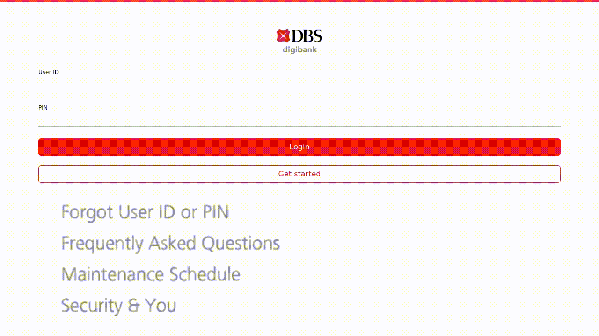
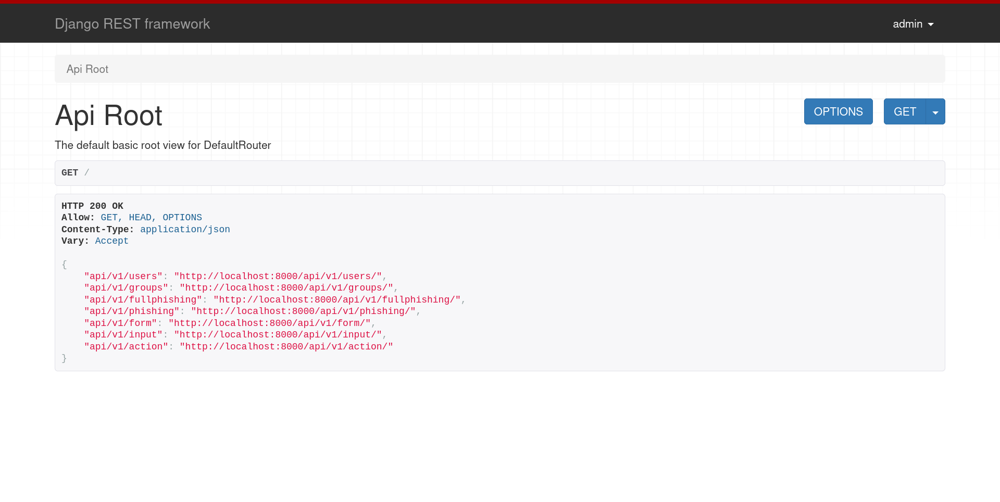
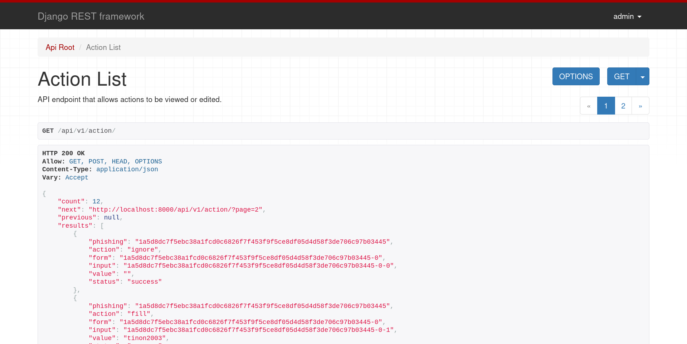

PhishFlood
PhishFlood is a python tool that uses playwright to automate the process of filling phishing websites with fake credentials.
NOTE This tool is meant for educational and research purposes only. Unauthorized use of this tool is strictly prohibited. The developers are not responsible for any misuse or damage caused by this tool.
Table of content
Demo
Example page interaction: 
Example output:
{
"url": "https://online.ib-internet-bakingssg.com/",
"html": "...",
"forms": [
{
"meta_id": 0,
"id": null,
"action": null,
"method": "none",
"type": null,
"inputs": [
{
"meta_id": 0,
"id": null,
"name": "UID",
"placeholder": null,
"type": "text"
},
{
"meta_id": 1,
"id": null,
"name": "pin",
"placeholder": null,
"type": "number"
}
]
}
],
"actions": [
{
"action": "fill",
"form": 0,
"input": 0,
"value": "cyber_dragon83",
"status": "success"
},
{
"action": "fill",
"form": 0,
"input": 1,
"value": "383510",
"status": "success"
}
]
}
Installation
Prerequisites
- Python 3.11 or higher
- Git
- Poetry
Clone the Repository
git clone https://github.com/solanav/phishflood.git
cd phishflood
Install Dependencies with Poetry
poetry install
Usage
Running CLI
poetry run python -m phishflood example.org
PhishFlood will launch a Playwright browser instance in the background and start filling in fake credentials on known phishing websites. The results will be stored on the samples/ directory.
Running the API
To start the API and all required componets (RabbitMQ, PostgreSQL and the workers) you can run:
docker compose -f docker/docker-compose.yml --compatibility up --build
The API will be running in localhost:8000 and you can start exploring the different endpoints through the web UI:

And here is a sample of one of the endpoints

Testing
We use pytest for testing. To run the tests, use the following command:
poetry run pytest
Make sure to have a controlled testing environment, as the tests involve interactions with websites.
Contributing
If you would like to contribute to this project, please open an issue or submit a pull request. We welcome any suggestions, improvements, or bug fixes.
Architecture
Here is a general overview of the code in this repository so you have an easier time contributing:
- api/: django project that provides the API to submit new cases and retrieve results.
- credfind/: module that finds forms and inputs in a given HTML source file.
- credgen/: module that generates random (realistic) credentials for inputs found in credfind.
- data/: folder with emails and passwords for the credgen module.
- docker/: contains the docker-compose and Dockerfiles necesary to get up and running the service.
- pages/: HTML sites to test the modules.
- phishflood/: main module that glues credfind and credgen, using playwright.
- samples/: output for the information obtained when using the phishflood manually as opposed to using it through the API.
- tests/: folder containing the unittests that check everything is behaving as expected.
- entrypoint.sh: script that prepares the django api and launches it. Used in docker/Dockerfile.api.
License
This project is licensed under the AGPL License.